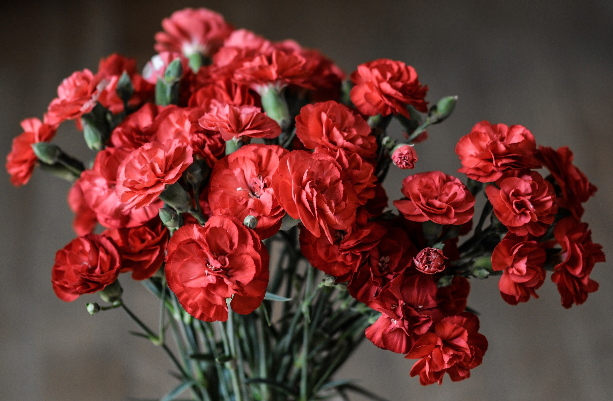

カーネーション
母の日に送るカーネーション。母の日が近づくにつれて、毎年花屋さんにはカーネーションが並びます。そんなカーネーションは日本の市場だけでも、なんと1000種類以上が存在しているのです。カーネーションの花言葉をご紹介します。
- 赤・・・「母への愛」「熱烈な愛」
- 濃い赤・・・「欲望」「心の哀しみ」
- ピンク・・・「温かい心」「感謝」「美しい仕草」
- 白・・・「純粋の愛」「尊敬」
- 紫・・・「気品」「誇り」
母の日に送るカーネーション。母の日が近づくにつれて、毎年花屋さんにはカーネーションが並びます。そんなカーネーションは日本の市場だけでも、なんと1000種類以上が存在しているのです。カーネーションの花言葉をご紹介します。